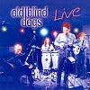

Celtic Lyrics Corner > Artists & Groups > Old Blind Dogs > Live > Bennachie
|  | Bennachie |
| Credits : | Traditional; arranged by Old Blind Dogs |
| Appears On : | New Tricks ; Live |
| Language : | Scots-English |
Lyrics :
Chorus (after each verse)
:
Gin I were whaur the gaudie rins
Whaur the gaudie rins, whaur the gaudie rins
Gin I were whaur the gaudie rins
The back o' Bennachie
I niver had but twa richt lads
Twa richt lads, twa richt bonnie lads
I niver had but twa richt lads
That dearly courted me
Ane was killed at the laurin' fair
The laurin' fair, the laurin' fair
Ane was killed at the laurin' fair
The ither was droont in the Dee
They croodit in sae thick on them
Thick on them, sae thick on them
They croodit in sae thick on them
They couldna fecht nor flee
Well, he gave tae me the haunin' fine
The haunin' fine, the haunin' fine
He gave tae me the haunin' fine
The mornin' dressed tae be
I gave tae him the linen fine
The linen fine, the linen fine
I gave tae him the linen fine
His windin' sheets to be
Well, gin I were whaur the gaudie rins
Wi' the bonny broom an' the yellow whims
Gin I were whaur the gaudie rins
Oh gin I were whaur the gaudie rins
Wi' the bonny broom an' the yellow whims
Gin I were whaur the gaudie rins
At the back o' Bennachie